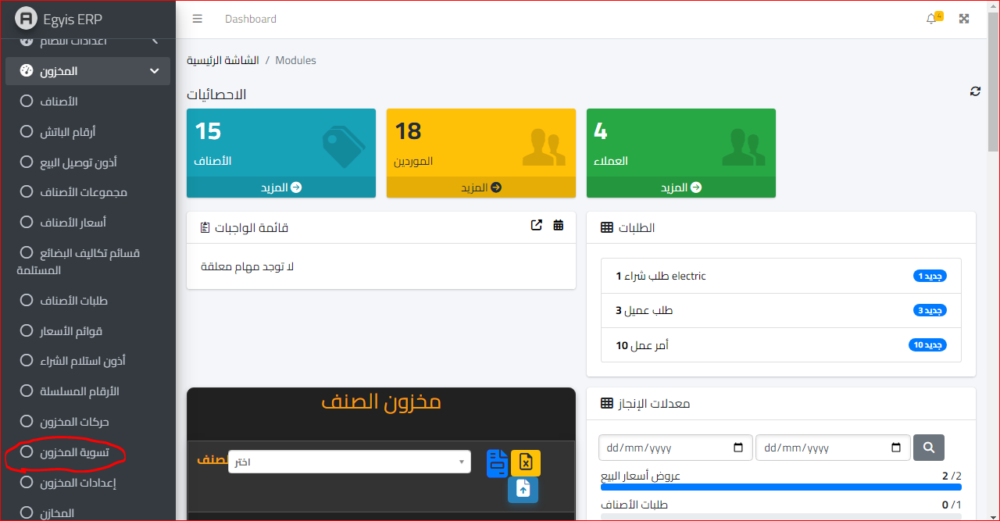
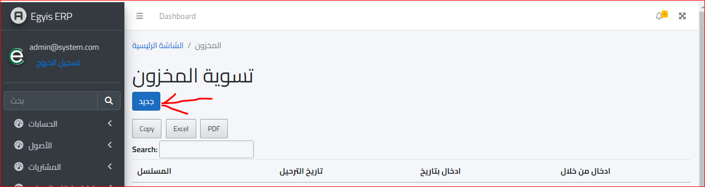
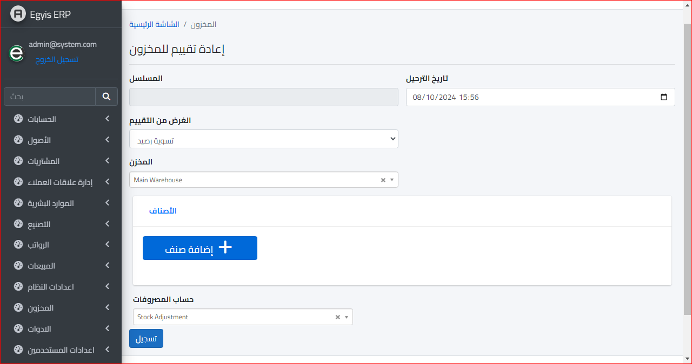
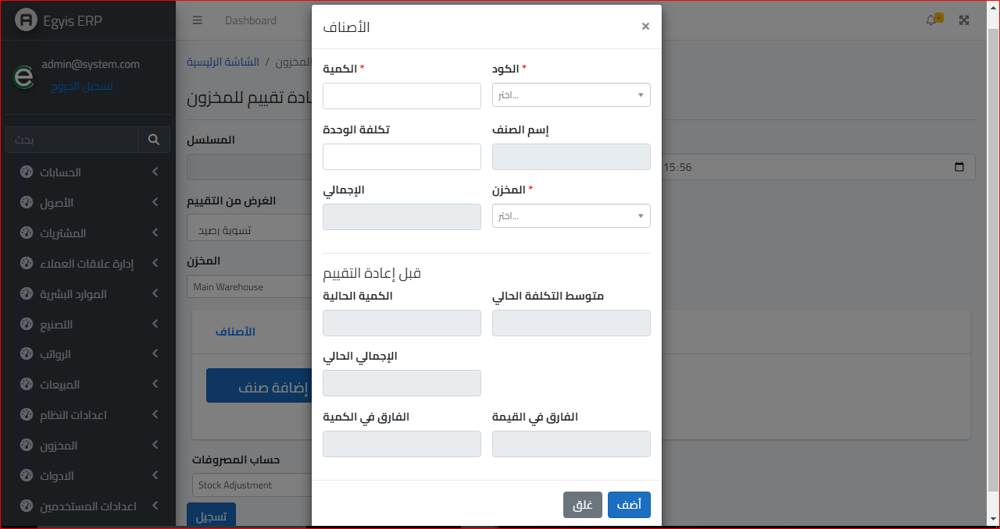
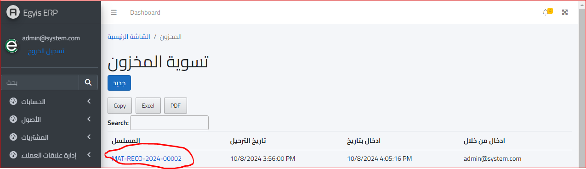
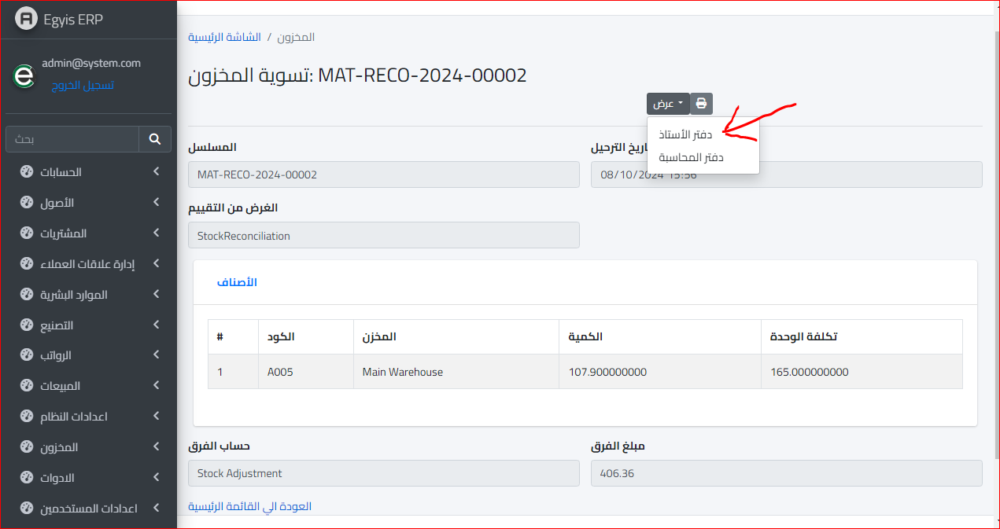
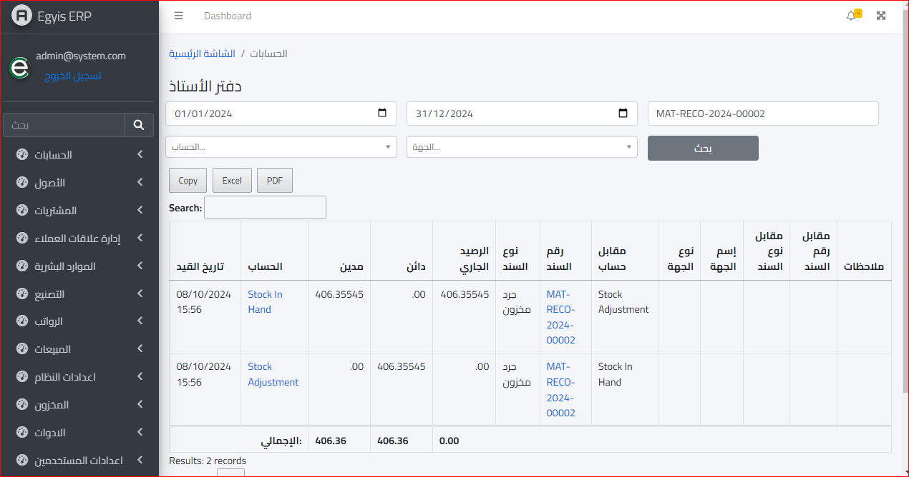
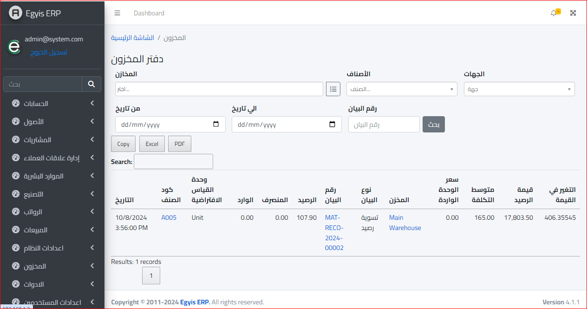

تسوية المخزون
يتم فتح موديول المخزون واختيار قائمة تسوية المخزون كالتالي :
ثم ستظهر الشاشة التالية :
ولعمل تسوية جديدة ننقر على جديد وستظهر الشاشة التالية :
المسلسل : وهو يعد تلقائيا بواسطة السيستم
تاريخ الترحيل : وهو يتم ادخاله يدويا
الغرض من التقييم : ويتم تحديده حسب الحالة وقد يكون :
- تسوية رصيد
- رصيد افتتاحي
المخزن : وتم تحديد المخزن المراد عمل التسوية به
المصروفات : وهنا يتم تحديد الحساب الخاص بالمصروفات
الاصناف : ويتم ادخال الاصناف المراد عمل تسوية لها
ويجب مراعاة البيانات قبل التسوية وبعدها
والتأكد من مطابقتها للواقع حتى لا يؤثر على أرصدة المخزون بالقوائم المالية
وعند الانتهاء يتم الضغط على زر تسجيل وستظهر الصفحة التالية مباشرة :
ولعرض تفاصيل هذه التسوية ستظهر الصفحة التالية :
ويمكن عرض القيود الخاصة بهذه التسوية عن طريق نقر خانة عرض والضغط علي دفتر الاستاذ لعرضها هناك
وتظهر بهذا الشكل ضمن قيود دفتر الأستاذ
وتظهر بهذا الشكل في دفتر المخزون :
